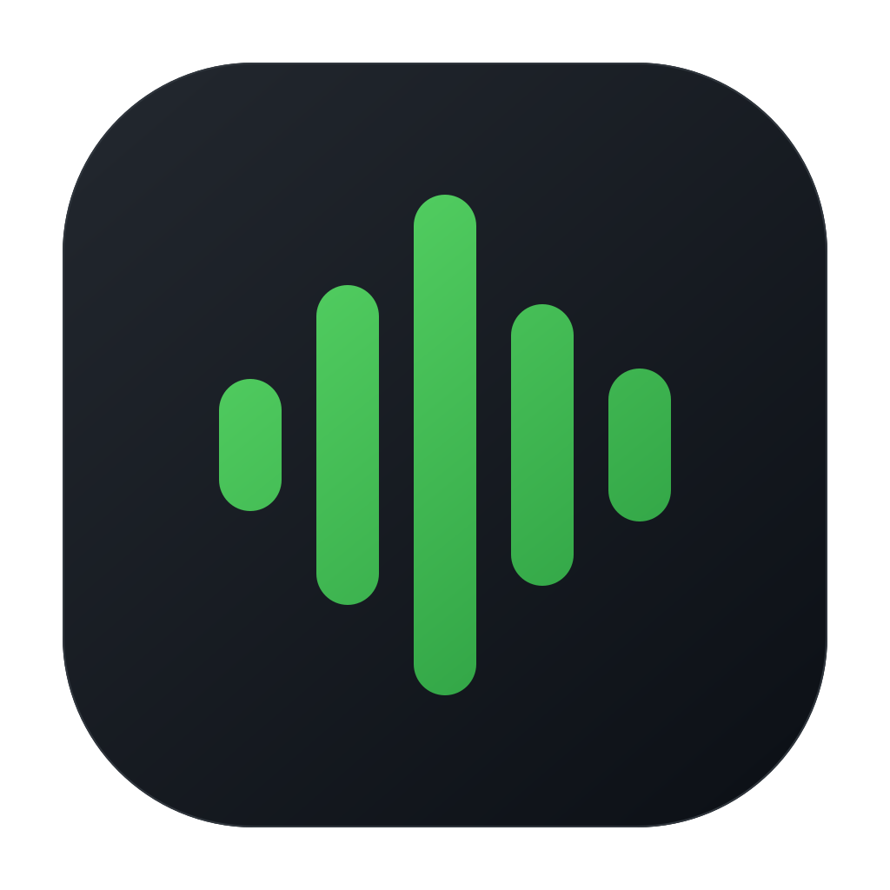

Invisible by design
No windows, Dock icon, accounts, or launch noise. It is there only when you need it.

DevNoiseOpen source · macOS 13+
A tiny, keyboard-first procedural noise app that lives entirely in your Mac menu bar.
v1.0.0 · Universal Apple silicon + Intel · MIT licensed
No windows, Dock icon, accounts, or launch noise. It is there only when you need it.
Four procedural noise colors, synthesized on-device with zero audio files or network calls.
No analytics, telemetry, microphone, accounts, update agents, or captured typing.
Keyboard first
Six fixed global shortcuts work from any app without asking for accessibility access.
Built in the open
Six documented Swift files. AppKit, AVFoundation, and Carbon. No packages and no hidden services.